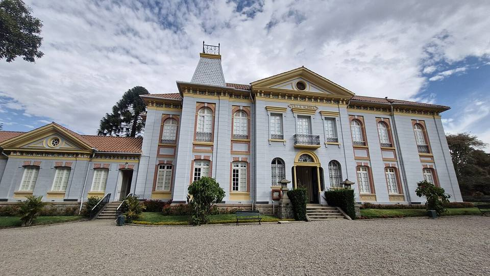
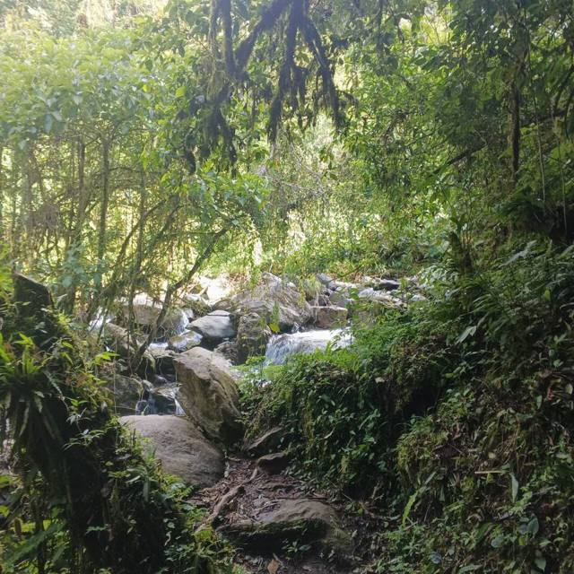
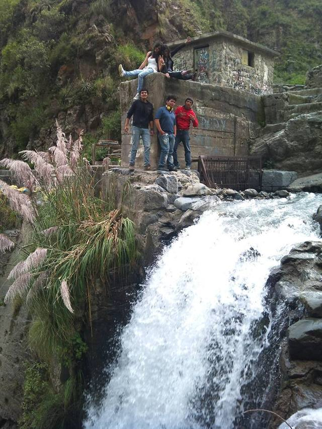
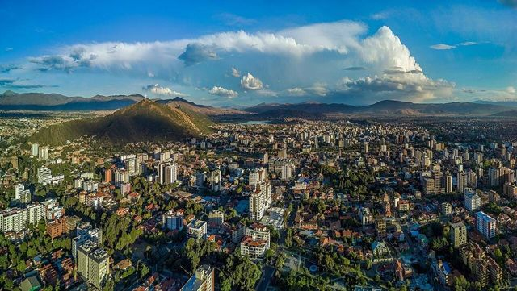

Pairumani et Villa Albina
Département de Cochabamba · Culture et histoire

Au pied de la cordillère du Tunari, à Pairumani, Simón I. Patiño, l'homme de l'étain devenu l'un des plus riches du monde, fit construire dans les années 1920-1930 une villa à l'européenne pour sa femme Albina. On visite ses salons meublés, ses grands jardins aux arbres rares et le mausolée où reposent le couple. Juste au-dessus, le parc de Pairumani est le point de départ d'une montée exigeante vers le Tunari par sa face sud.
2 650 maltitude
0 à 1 joursur place
À faire
- Visite guidée de Villa Albina et de ses jardins
- Le mausolée de Simón et Albina Patiño
- Randonnée depuis le parc de Pairumani vers les hauteurs du Tunari
À goûter
- ChichaBière de maïs fermentée, légèrement acide, servie dans des calebasses (tutumas). On la trouve dans les chicherías signalées par un drapeau blanc.
- ChicharrónMorceaux de porc confits dans leur graisse puis dorés, servis avec du mote (gros maïs) et du chuño. Le plat du dimanche.
Conseil. Visites en petits groupes, le matin du mardi au samedi : réserver par téléphone avant de venir. Trufi depuis la place de Quillacollo, ou taxi depuis Cochabamba (environ 40 min). Le Palacio Portales, en ville, complète bien la visite.
Comment aller à Villa Albina
Cochabamba Route (bus, voiture) · 40 min à 1 h
Trufi jusqu'à Quillacollo, puis trufi vers Pairumani (arrêt Villa Albina), ou taxi.
Photos de Pairumani et Villa Albina




Autres lieux de la région

CochabambaLa « ville de l'éternel printemps » et capitale gastronomique du pays. Laguna AlalayUne grande lagune au cœur de Cochabamba, refuge d'oiseaux au pied des collines.
Laguna AlalayUne grande lagune au cœur de Cochabamba, refuge d'oiseaux au pied des collines. Parc national TunariLes montagnes juste au-dessus de la ville : lagunes d'altitude et le sommet du Tunari (5 035 m).
Parc national TunariLes montagnes juste au-dessus de la ville : lagunes d'altitude et le sommet du Tunari (5 035 m).- Apote et ses cascades jumellesUne vallée de montagne au-dessus de Tiquipaya, avec deux cascades côte à côte et des sentiers vers le Tunari.
 YungapampaUn refuge au-dessus d'une mer de nuages, sur le versant nord du Tunari, territoire de l'ours andin.
YungapampaUn refuge au-dessus d'une mer de nuages, sur le versant nord du Tunari, territoire de l'ours andin. Laguna CoraniUn grand lac de barrage entre forêts de pins et montagnes, connu pour sa truite.
Laguna CoraniUn grand lac de barrage entre forêts de pins et montagnes, connu pour sa truite. IncachacaUne forêt de nuages au bord du Chapare, avec un pont inca, des cascades et une vieille centrale électrique.
IncachacaUne forêt de nuages au bord du Chapare, avec un pont inca, des cascades et une vieille centrale électrique. Valle Alto : Tarata et ClizaVillages coloniaux de la vallée, marchés et chicha.
Valle Alto : Tarata et ClizaVillages coloniaux de la vallée, marchés et chicha. Quillacollo et Inca RakayRuines incas perchées au-dessus de Sipe Sipe, et Quillacollo, ville de l'Urkupiña.
Quillacollo et Inca RakayRuines incas perchées au-dessus de Sipe Sipe, et Quillacollo, ville de l'Urkupiña. Parc national TorotoroEmpreintes de dinosaures, canyon spectaculaire et grotte d'Umajalanta. Un incontournable depuis Cochabamba.
Parc national TorotoroEmpreintes de dinosaures, canyon spectaculaire et grotte d'Umajalanta. Un incontournable depuis Cochabamba. IncallajtaLe plus grand site inca de Bolivie, dans une vallée isolée.
IncallajtaLe plus grand site inca de Bolivie, dans une vallée isolée. TotoraPetit village colonial très bien conservé sur l'ancienne route vers Santa Cruz.
TotoraPetit village colonial très bien conservé sur l'ancienne route vers Santa Cruz. AiquileLa capitale nationale du charango, à mi-chemin entre Cochabamba et Sucre.
AiquileLa capitale nationale du charango, à mi-chemin entre Cochabamba et Sucre. MizqueVillage colonial d'une vallée chaude, terre de l'ara à front rouge.
MizqueVillage colonial d'une vallée chaude, terre de l'ara à front rouge.